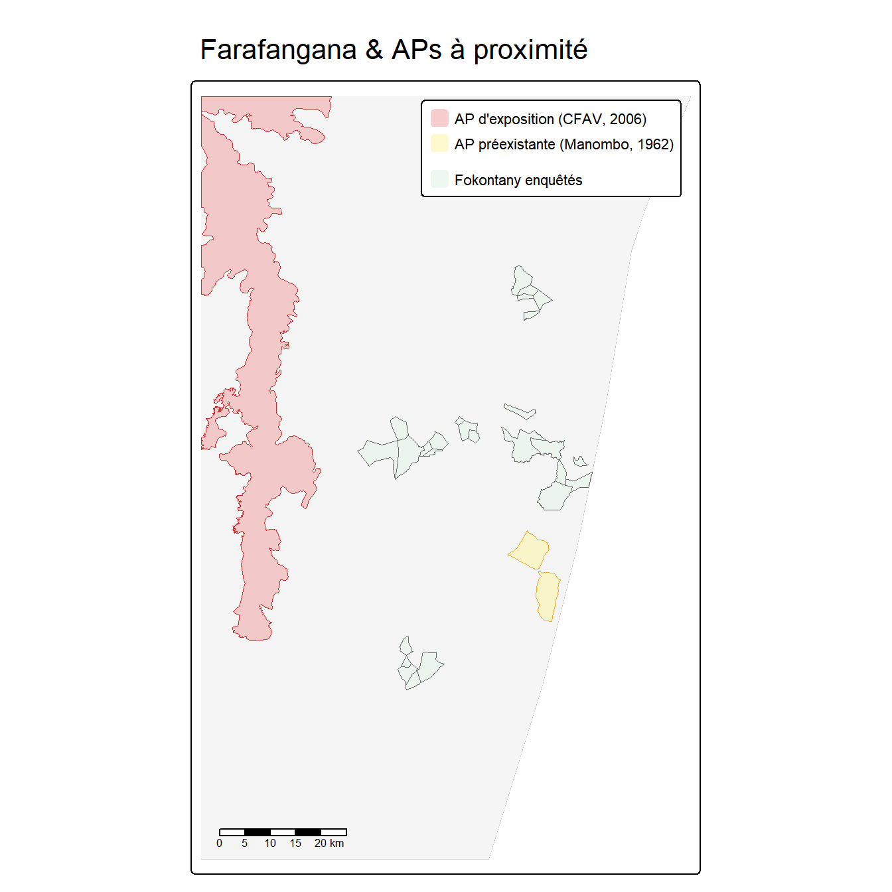
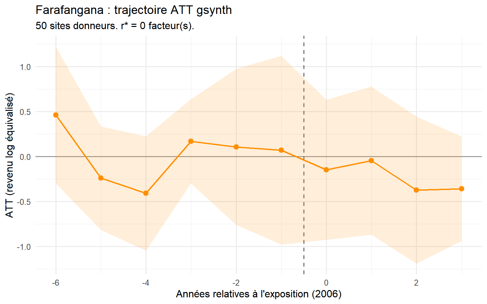
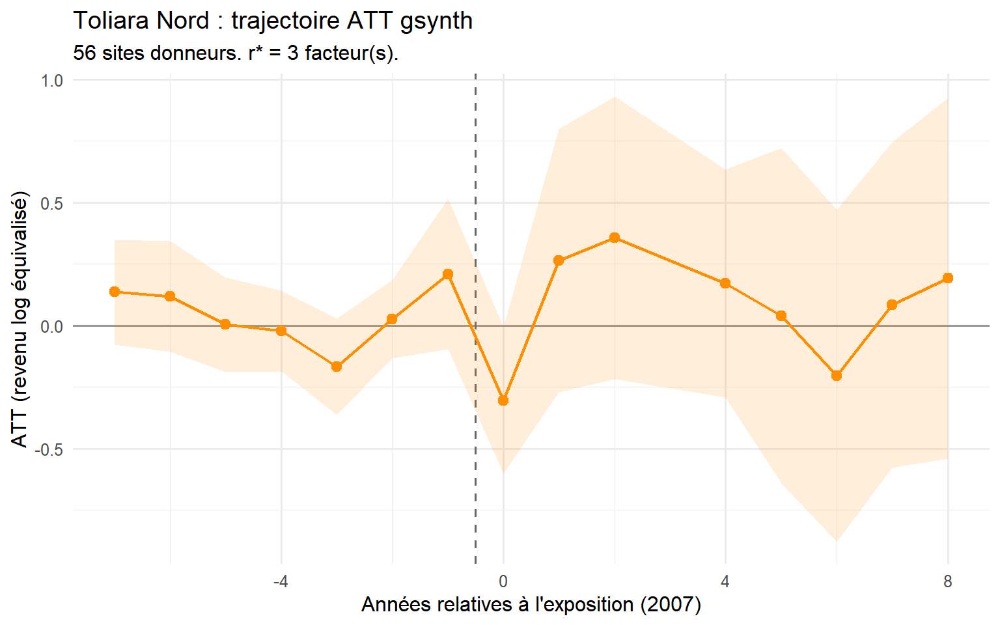
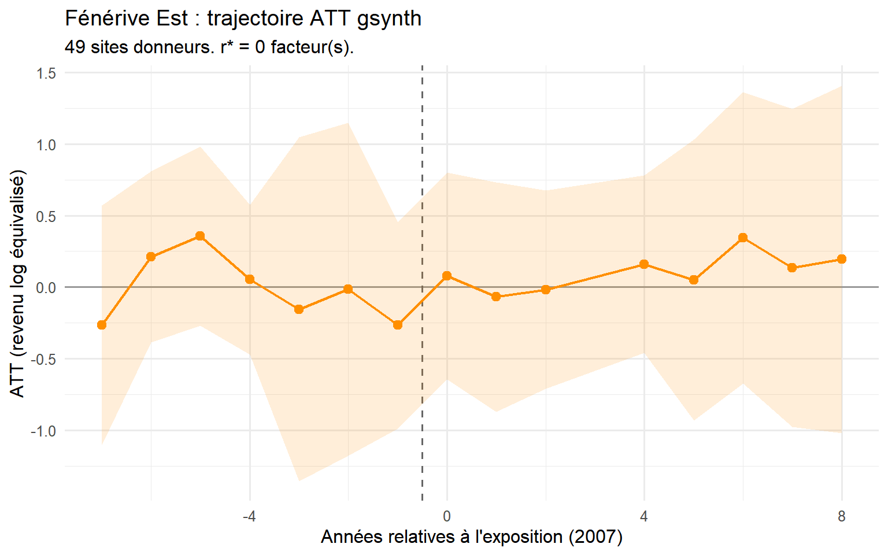

5 Extensions
Trois paires observatoire–AP supplémentaires
La comparaison à deux cas du Chapitre 4 — enforcement strict à Ankarafantsika versus conservation participative au Lac Alaotra — limite la validité externe. Ce chapitre étend l’analyse à trois observatoires ruraux supplémentaires que l’audit du pool de donneurs (Annexe B) a identifiés comme eux-mêmes adjacents à des aires protégées créées pendant la période d’étude :
- Farafangana (obs. 15) : adjacent au Corridor Forestier Ambositra-Vondrozo (catégorie V UICN, septembre 2006). Fenêtre d’enquête : 1999–2008 (3 années post-traitement seulement).
- Toliara Nord (obs. 23) : adjacent à Amoron’i Onilahy (catégorie V UICN, janvier 2007), Parc National de Mikea (catégorie II, avril 2007) et Ranobe PK 32 (catégorie V, décembre 2008). Fenêtre d’enquête : 1999–2014.
- Fénérive Est (obs. 24) : adjacent à la Réserve de Tampolo (catégorie IV UICN, août 2007), une petite forêt de recherche (~7,3 km²) gérée par ESSA-Forêts. Fenêtre d’enquête : 1999–2014.
Ces trois observatoires passent de contraintes dans le pool de donneurs à des unités exposées informatives. Ensemble avec Marovoay et Alaotra, ils permettent un examen à cinq cas de la façon dont le type de gouvernance de conservation, l’intensité d’application et la taille de l’AP façonnent les résultats de revenu des ménages. Les résultats de ces trois sites doivent toutefois être interprétés avec prudence, car les fenêtres post-traitement plus courtes limitent la précision des estimateurs.
Une note méthodologique : le pool de donneurs dans ce chapitre est restreint aux cinq observatoires propres (Antsirabe, Tsiroanomandidy, Ambovombe, Mahanoro, Itasy). Les quatre donneurs aussi exposés utilisés au Chapitre 4 sont maintenant traités comme unités exposées. Les estimations ATT pour Marovoay et Alaotra différeront donc légèrement de leurs équivalents du Chapitre 4.
6 Sites d’étude
6.1 Farafangana et le Corridor Forestier Ambositra-Vondrozo
Le CFAV (~300 km, catégorie V UICN) longe l’escarpement oriental des hautes terres. Un décret de protection temporaire a été émis le 15 septembre 2006 dans le cadre de l’expansion SAPM post-2003. Le statut catégorie V implique une réglementation de l’utilisation des terres à la lisière forestière — principalement des restrictions sur le tavy et la production de charbon de bois dans les zones tampons — plutôt qu’un enforcement d’exclusion.
L’observatoire de Farafangana est situé sur la plaine côtière sud-est ; sa commune la plus proche (Mahatsinjo) borde le CFAV à ~14 km. Avec seulement 3 années post-traitement (2006–2008), les estimations gsynth doivent être considérées comme illustratives.
6.2 Résultats : Farafangana

6.3 Toliara Nord et l’AP Amoron’i Onilahy
L’observatoire de Toliara Nord (obs. 23) est adjacent à plusieurs aires protégées créées en 2007–2008 dans la région côtière du sud-ouest. Amoron’i Onilahy (catégorie V UICN) est la plus proche, à ~8 km de plusieurs communes de l’observatoire. La multiplicité des AP adjacentes et leurs catégories UICN variables compliquent l’identification d’une exposition nette.

6.4 Fénérive Est et la Réserve de Tampolo
L’observatoire de Fénérive Est (obs. 24) est adjacent à la Réserve de Tampolo (catégorie IV UICN), une petite réserve de recherche forestière de ~7,3 km² gérée par ESSA-Forêts. Sa taille est un ordre de grandeur inférieure à celle des autres AP examinées dans cette étude, ce qui rend moins plausible une perturbation substantielle des moyens de subsistance.

7 Trois régularités dans cinq cas
En combinant les résultats des deux cas primaires (Chapitre 4) et des trois extensions (Chapitre 5), trois régularités apparaissent :
Régularité 1 : Seul l’enforcement strict est associé à un écart de revenu négatif. Le site présentant l’enforcement le plus exclusif — Ankarafantsika (catégorie II UICN) — est le seul pour lequel gsynth identifie un ATT substantiellement négatif. Cette régularité persiste à travers les spécifications et jusqu’en 2025. L’interprétation reste cependant prudente en raison du déclin régional documenté de la plaine de Marovoay, qui prédate l’exposition au parc et pourrait contribuer à l’écart observé.
Régularité 2 : La conservation multifonctionnelle et le parc de recherche produisent des effets proches de zéro. Alaotra (catégorie V), Farafangana (catégorie V), Toliara Nord (catégorie V) et Fénérive Est (catégorie IV) présentent tous des ATT proches de zéro et statistiquement non significatifs. La cohérence de ce résultat nul sur quatre cas indépendants renforce la conclusion que les dispositifs de conservation participatifs ou à intensité modérée n’imposent pas de coût de revenu agrégé aux ménages adjacents.
Régularité 3 : Les effets nuls ne prouvent pas l’absence d’impact. Avec un seul site exposé pour several cas, la puissance minimale réalisable est insuffisante pour détecter des effets inférieurs à 15–20%. Les résultats nuls doivent être interprétés comme « aucun effet détectable » plutôt que comme « certitude d’absence d’effet ».
8 Mises en garde
Plusieurs mises en garde s’appliquent à l’ensemble des résultats de ce chapitre.
La courte fenêtre post-traitement pour Farafangana (3 ans) ne permet pas à gsynth d’établir une trajectoire ATT stable ; les résultats doivent être considérés comme illustratifs plutôt qu’informatifs.
Pour Toliara Nord, la proximité simultanée de plusieurs aires protégées de catégories et dates différentes complique l’identification d’une exposition nette à une AP spécifique. L’ATT estimé absorbe potentiellement des signaux d’exposition multiples.
La Réserve de Tampolo à Fénérive Est est si petite (~7,3 km²) que son footprint spatial délimite seulement une infime fraction des terres utilisées par l’observatoire. Même si une exclusion réelle avait lieu, l’effet agrégé au niveau de l’observatoire pourrait rester indétectable.
Enfin, la restriction du pool de donneurs aux cinq observatoires propres dans ce chapitre réduit le nombre de sites donneurs par rapport au Chapitre 4, ce qui peut augmenter la variabilité des estimations pour les cas à pool de donneurs réduit.